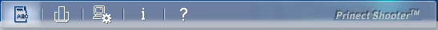
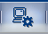
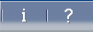

The operating panel is the central control element in the Prinect Shooter Print Manager.

The buttons for changing between "Jobs", "Devices" and "Administration" are found at the left of the operating panel. If you go to a different section, the contents of the dynamic window and the dynamic control panel change.
These areas constitute the top hierarchy level within the Prinect Shooter user interface.
In the "Job" section, all the jobs that are currently in the system are listed. You can apply different filters to the listed jobs by switching between the tabs. For example, you can list those jobs that are already completed by switching to the "Completed" tab.
The installed output device is listed in "Devices". By double-clicking the entry in the list, you can call up the Engine Manager to manage the device.

In the "Administration" section you can manage the configuration and system settings.
There are two buttons to the right of the three function buttons which you can use to call up the information page showing the Prinect Shooter version or the Online Help (question mark).

 Note: You can also display the Online Help with the
Note: You can also display the Online Help with the
F1
key on the keyboard. A Help window whose content relates to the element you marked in the user interface then opens.
Copyright © 2013 Heidelberger Druckmaschinen AG